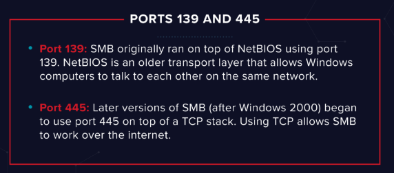

Task 2 Enumerating Samba for shares
Samba is the standard Windows interoperability suite of programs for Linux and Unix. It allows end users to access and use files, printers and other commonly shared resources on a companies intranet or internet. Its often referred to as a network file system.
Samba is based on the common client/server protocol of Server Message Block (SMB). SMB is developed only for Windows, without Samba, other computer platforms would be isolated from Windows machines, even if they were part of the same network.
Using nmap we can enumerate a machine for SMB shares.
Nmap has the ability to run to automate a wide variety of networking tasks. There is a script to enumerate shares!
nmap -p 445 --script=smb-enum-shares.nse,smb-enum-users.nse 10.10.69.234SMB has two ports, 445 and 139.
Using the nmap command above, how many shares have been found? \\10.10.69.234\IPC$:
\\10.10.69.234\anonymous:
\\10.10.69.234\print$:
Answer: 3
On most distributions of Linux smbclient is already installed. Lets inspect one of the shares.
smbclient //<ip>/anonymousUsing your machine, connect to the machines network share.
• no password was required, just a simple enter
Once you're connected, list the files on the share. What is the file can you see?
• ls
• log.txt
You can recursively download the SMB share too. Submit the username and password as nothing.
smbget -R smb://<ip>/anonymousOpen the file on the share. There is a few interesting things found.
• Information generated for Kenobi when generating an SSH key for the user
• Information about the ProFTPD server.
What port is FTP running on?
Answer: 21
Your earlier nmap port scan will have shown port 111 running the service rpcbind. This is just a server that converts remote procedure call (RPC) program number into universal addresses. When an RPC service is started, it tells rpcbind the address at which it is listening and the RPC program number its prepared to serve.
In our case, port 111 is access to a network file system. Lets use nmap to enumerate this.
nmap -p 111 --script=nfs-ls,nfs-statfs,nfs-showmount 10.10.69.234What mount can we see? Answer: /var
{kind=link}